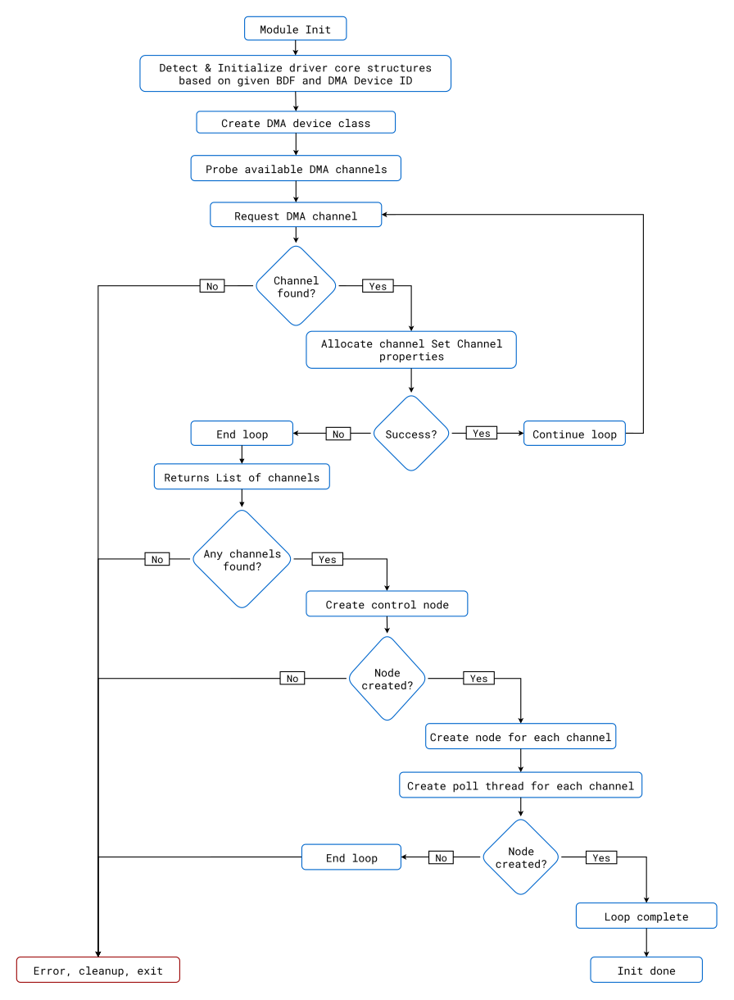
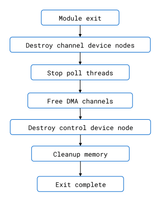
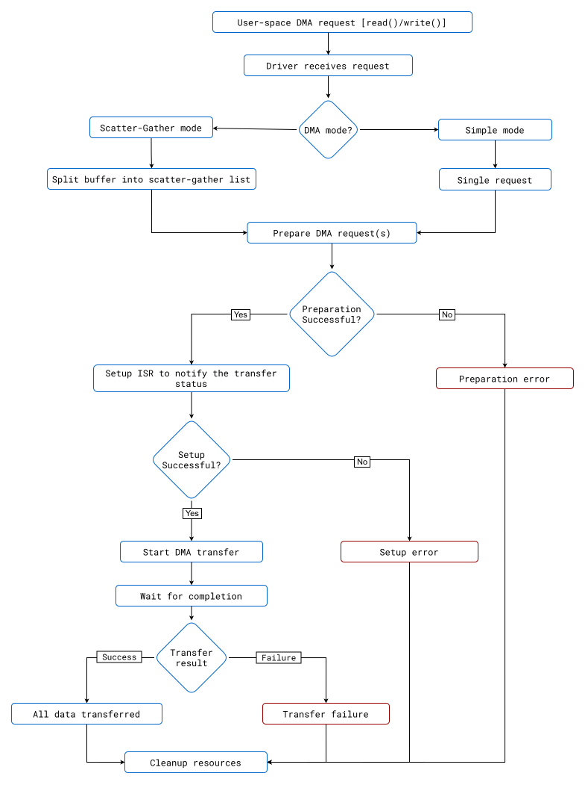
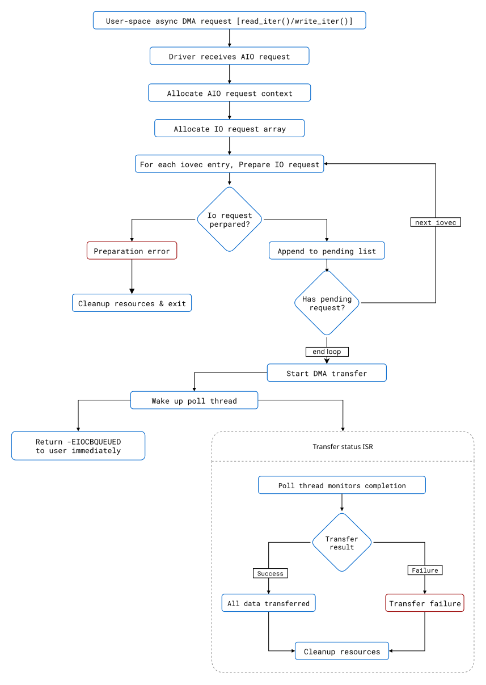
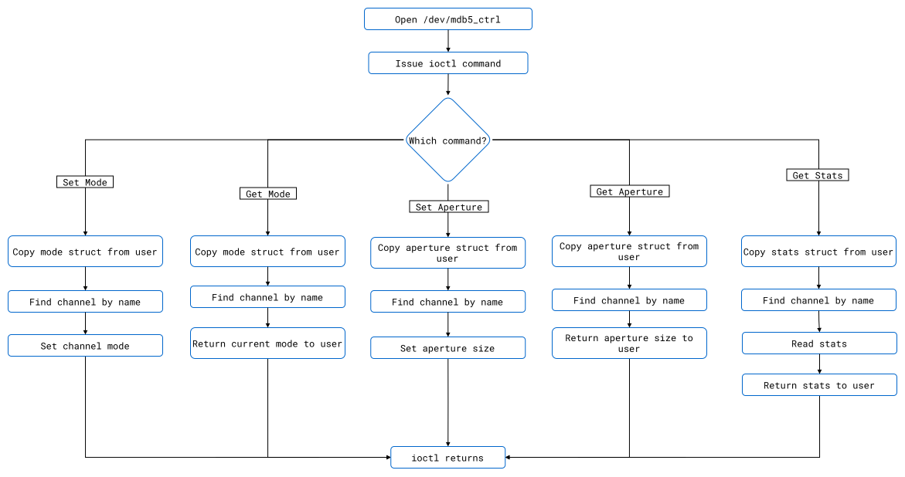
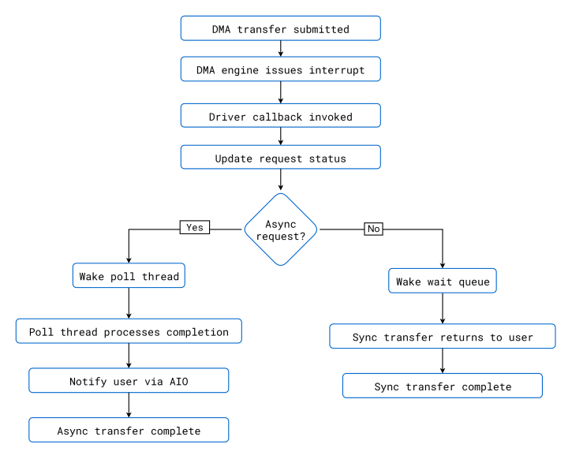

Driver Operations
Note
This section exclusively focuses on the Client Driver, detailing its operations, initialization process, and interaction with the DMA controller. The Controller Driver is not covered here.
Client Driver Init
The driver initialization process is the entry point for the MDB5-DMA Client Driver, setting up all components required for DMA operations. The Client Driver provides control access to both the DMA controller and its channels. It creates an mdb5 class device, probes all available channels (16 per device: 8 write, 8 read), and stores the capabilities of each channel. The function creates a device node for device-wide configuration and control, followed by nodes for each channel to enable channel-specific operations and transfers.
If any step fails, the function ensures proper cleanup of resources, including releasing DMA channels, destroying character devices, and freeing memory. Upon successful initialization, the driver is ready for DMA operations and provides interfaces for channel management and data transfer.
Module Init Flowchart:

Client Driver Exit
The client driver exit process ensures all resources allocated during initialization are properly released. This includes destroying device nodes, stopping poll threads, freeing DMA channels, and cleaning up memory. The exit routine guarantees a clean removal of the MDB5-DMA client driver from the system.
Module Exit Flowchart:

Client Driver Transfer Operations
Scatter-Gather (Linked-list) DMA Call Flow (read/write):
Scatter-Gather (Linked-list) DMA operations are performed via standard read and write system calls on channel device nodes (e.g., /dev/mdb5_read00). The driver supports both Simple (Non Linked-list) Mode and Scatter-Gather (Linked-list) Mode. In Scatter-Gather (Linked-list) DMA mode, user buffers are pinned and mapped into a Scatter-Gather (Linked-list) list, which is submitted to the DMA engine for transfer. The operation is blocking and the call waits for completion before returning.
Scatter-Gather (Linked-list) DMA Read/Write Flow:
User issues read/write syscall on the channel device node.
Driver selects transfer mode (Scatter-Gather (Linked-list) DMA or Simple (Non Linked-list) Mode) based on channel configuration.
Prepare Scatter-Gather (Linked-list) list & pin user pages: User buffer is split into pages, pinned, and mapped into a Scatter-Gather (Linked-list) list.
DMA map pages: Pages are mapped for DMA access.
Configure DMA engine: DMA descriptors are prepared and configured.
Submit & issue pending: Transfer is submitted to the DMA engine and started.
Wait for completion: The driver blocks until the transfer completes or times out.
Return result: On success, the number of bytes transferred is returned; on error, a negative error code.
Scatter-Gather (Linked-list) DMA Flowchart:

Async IO Call Flow (pread/pwrite):
Asynchronous I/O operations use vectored I/O interfaces (preadv, pwritev, or kernel equivalents). These calls allow multiple buffers to be submitted in a single operation, enabling non-blocking DMA transfers. The driver tracks each request, submits them to the DMA engine, and notifies the application upon completion via the AIO mechanism.
Async IO Flow:
User issues preadv/pwritev syscall with multiple buffers.
Driver prepares multiple IO requests: Each iovec entry is converted into a DMA request.
Pin pages & build Scatter-Gather (Linked-list) lists: Each buffer is pinned and mapped into a Scatter-Gather (Linked-list) list.
DMA map pages: Pages are mapped for DMA access.
Configure DMA engine: DMA descriptors are prepared for each request.
Submit all requests: All requests are submitted to the DMA engine.
Issue pending: DMA engine is triggered to start all transfers.
Poll thread waits for completion: A kernel poll thread monitors completion of all requests.
Notify user via AIO: Upon completion, the application is notified asynchronously.
Async IO Flowchart:

Client Driver Control Operations
The MDB5-DMA client driver exposes a control device node /dev/mdb5_ctrl for device-wide and per-channel configuration and querying. This node supports several ioctl commands for runtime control and monitoring.
Control Node Usage:
Applications open /dev/mdb5_ctrl and use ioctl calls to perform control operations. Supported commands include:
Set/Get Channel Mode: Switch a channel between Scatter-Gather (Linked-list) Mode and Simple (Non Linked-list) Mode.
Set/Get Aperture Size: Configure the aperture size for Scatter-Gather (Linked-list) DMA mode.
Get Channel Statistics: Retrieve runtime statistics for a channel (requests, bytes transferred, errors, etc).
Supported Ioctl Commands:
Command |
Purpose |
Structure |
|---|---|---|
IOCTL_MDB5_SET_TRANSFER_MODE |
Set channel mode |
struct ctrl_mode |
IOCTL_MDB5_GET_TRANSFER_MODE |
Get channel mode |
struct ctrl_mode |
IOCTL_MDB5_SET_APERTURE_SIZE |
Set channel aperture size |
struct ctrl_aperture |
IOCTL_MDB5_GET_APERTURE_SIZE |
Get channel aperture size |
struct ctrl_aperture |
IOCTL_MDB5_STATS |
Get channel statistics |
struct ctrl_stats |
Control Operations Flowchart:

Example: Set Channel Mode
// In user application: channel name is constructed from user input (channel index and direction)
// Example: user selects channel 0, read direction -> "/dev/mdb5_read00"
struct ctrl_mode mode = {
.name = "/dev/mdb5_read00", // Constructed from user input
.mode = MDB5_MODE_SG // Mode selected by user
};
ioctl(fd, IOCTL_MDB5_SET_TRANSFER_MODE, &mode);
Example: Get Channel Statistics
// In user application: channel name is constructed from user input (channel index and direction)
// Example: user selects channel 0, read direction -> "/dev/mdb5_read00"
struct ctrl_stats stats = {
.name = "/dev/mdb5_read00", // Constructed from user input
.stat_addr = (u64)user_buffer
};
ioctl(fd, IOCTL_MDB5_STATS, &stats);
// user_buffer now contains statistics
Client Driver Interrupt Handling
Interrupts are used by the MDB5-DMA client driver to signal completion of DMA transfers, especially for asynchronous operations. When a DMA transaction is submitted, the DMA engine generates an interrupt upon completion. The driver handles this interrupt in a callback context, updates the request status, and wakes up any waiting threads or notifies the application via AIO.
Interrupt Handling Flow:
DMA transfer is submitted via Scatter-Gather (Linked-list) DMA or Async IO.
DMA engine generates interrupt when the transfer completes.
Driver callback is invoked (
amd_mdb5_comp_cboramd_mdb5_comp_result_cb).Request status is updated to indicate completion or error.
Poll thread or wait queue is woken up for further processing.
For async IO, completion is delivered to user via AIO notification.
Interrupt Handling Flowchart:

Key Functions in Source Code:
amd_mdb5_comp_cb(void *args): Handles interrupt for DMA completion, updates status, wakes up wait queue or schedules poll thread for async requests.amd_mdb5_comp_result_cb(void *args, const struct dmaengine_result *res): Handles result callback, including aborts and error handling.wait_event_interruptible_timeout(): Used to block until interrupt signals completion.Poll thread (
amd_mdb5_poll_thread_task) processes pending async completions.
Interrupts ensure timely notification of DMA transfer completion, enabling efficient and responsive data movement for both synchronous and asynchronous operations.
Writing a Custom DMA Client Driver
While the MDB5-DMA client driver provided in this package serves as a reference implementation, customers can write their own kernel drivers to interface with the DMA Controller Driver if they want fine-grained control. The Linux kernel’s DMA Engine framework provides a standardized API for writing client drivers that can leverage DMA controller capabilities.
Key Resources for Custom Driver Development:
Linux Kernel DMA Engine Client API Guide - Comprehensive guide on writing a custom DMA client driver using the DMA Engine framework
dw-edma Controller Driver Source - Reference implementation of the controller driver
DMA Engine API Implementation Details
The DMA Engine API is a Linux kernel framework that abstracts DMA controller operations, allowing custom DMA client drivers to perform efficient data transfers without hardware-specific details. The following sections demonstrate how the MDB5-DMA client driver implements these patterns.
Channel Allocation:
The driver requests DMA channels using dma_request_channel(), providing a capability mask and an optional filter function to select suitable channels.
dma_cap_mask_t mask;
dma_cap_zero(mask);
dma_cap_set(DMA_SLAVE, mask);
dma_cap_set(DMA_CYCLIC, mask);
struct dma_chan *chan = dma_request_channel(mask, amd_mdb5_filter_comp, filter);
if (!chan) {
return -ENODEV;
}
Descriptor Preparation:
For each transfer, the driver prepares a DMA descriptor. For Simple (Non Linked-list) transfers, and Scatter-Gather (Linked-list) transfers, use dmaengine_prep_slave_sg().
struct dma_async_tx_descriptor *desc;
desc = dmaengine_prep_slave_sg(chan, sg, num_blocks, DMA_MEM_TO_DEV, DMA_PREP_INTERRUPT);
if (!desc) {
dma_release_channel(chan);
return -EIO;
}
desc->callback = amd_mdb5_comp_cb;
desc->callback_param = comp;
Transfer Submission:
Submit the descriptor to the DMA Engine and start the transfer.
dma_cookie_t cookie = dmaengine_submit(desc);
if (dma_submit_error(cookie)) {
dma_release_channel(chan);
return -EIO;
}
dma_async_issue_pending(chan);
Completion Handling:
The DMA Engine notifies the driver of transfer completion via a callback. The driver can also wait for completion using kernel wait queues.
wait_event_interruptible_timeout(*comp->wq, amd_mdb5_comp_status_get(comp) == AMD_MDB5_REQ_INTR_RECV,
msecs_to_jiffies(comp->timeout_ms));
Error Handling:
Check for transfer errors and handle them gracefully.
enum dma_status status = dma_async_is_tx_complete(chan, cookie, NULL, NULL);
if (status != DMA_COMPLETE)
return -EIO;
Example Flow:
A typical Scatter-Gather (Linked-list) DMA transfer using the DMA Engine:
dma_cap_mask_t mask;
dma_cap_zero(mask);
dma_cap_set(DMA_SLAVE, mask);
dma_cap_set(DMA_CYCLIC, mask);
struct dma_chan *chan = dma_request_channel(mask, amd_mdb5_filter_comp, filter);
if (!chan) {
return -ENODEV;
}
struct dma_async_tx_descriptor *desc = dmaengine_prep_slave_sg(chan, sg, num_blocks,
DMA_MEM_TO_DEV, DMA_PREP_INTERRUPT);
if (!desc) {
dma_release_channel(chan);
return -EIO;
}
desc->callback = amd_mdb5_comp_cb;
desc->callback_param = comp;
dma_cookie_t cookie = dmaengine_submit(desc);
if (dma_submit_error(cookie)) {
dma_release_channel(chan);
return -EIO;
}
dma_async_issue_pending(chan);
wait_event_interruptible_timeout(*comp->wq, amd_mdb5_comp_status_get(comp) == AMD_MDB5_REQ_INTR_RECV,
msecs_to_jiffies(comp->timeout_ms));
if (dma_async_is_tx_complete(chan, cookie, NULL, NULL) != DMA_COMPLETE) {
return -EIO;
}
By leveraging the DMA Engine, the MDB5-DMA client driver can perform both Simple (Non Linked-list) and Scatter-Gather (Linked-list) transfers efficiently.